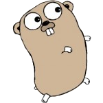

Go
Hinweis:
Das gleichnamige asiatische Brettspiel ist unter Spiele/Go zu finden.
Dieser Artikel wurde für die folgenden Ubuntu-Versionen getestet:
Dieser Artikel ist größtenteils für alle Ubuntu-Versionen gültig.
Zum Verständnis dieses Artikels sind folgende Seiten hilfreich:
 Go ist eine seit 2009 von Google entwickelte Programmiersprache mit Ähnlichkeiten zu C++, Java und Erlang. Sie ist kompilierbar, nebenläufig und besitzt eine automatische Speicherbereinigung. Zur Zeit wird Go für Linux, Mac OS X, FreeBSD und Windows angeboten, es ist also weitestgehend plattformunabhängig. Durch die umfangreiche Standardbibliothek werden von Haus aus z.B. Netzwerkprogrammierung (TCP, HTTP), formatierte Textein- und -ausgabe, Kryptographie, Systemaufrufe etc. unterstützt.
Ende März 2012 wurde die Version 1.0 veröffentlicht  . Seitdem ist die Sprache keinen inkompatiblen Änderungen mehr unterworfen. Hilfe beim Einstieg bietet die offizielle Homepage
. Seitdem ist die Sprache keinen inkompatiblen Änderungen mehr unterworfen. Hilfe beim Einstieg bietet die offizielle Homepage  golang.org, wo es eine interaktive Einführungs-Tour, Hinweise zum effektiven Programmieren mit Go, Videos, Antworten zu häufig gestellten Fragen (FAQ) und Dokumentation der Standardbibliothek gibt.
golang.org, wo es eine interaktive Einführungs-Tour, Hinweise zum effektiven Programmieren mit Go, Videos, Antworten zu häufig gestellten Fragen (FAQ) und Dokumentation der Standardbibliothek gibt.
Ein Aspekt, der Go von älteren Programmiersprachen wie C++ abhebt, ist die Verwendung des gesamten UTF-8 Zeichensatzes im Quelltext. Dies gilt sowohl für Variablennamen als auch in der Textausgabe. Somit bleiben z.B. Probleme mit Umlauten aus. Weiteres zu den Besonderheiten unter Syntax.
Aufgrund der Gleichheit des Namens der Programmiersprache zum englischen Verb "go" und zum japanischen Brettspiel, hat sich die Verwendung von "golang" (Kurzform für "Go Language") bei der Suche im Web, Hashtags etc. eingebürgert.
Installation¶
Hinweis:
Wer Go ohne Installation direkt im Web ausprobieren möchte, kann dies im Go Playground tun. Allerdings werden hier aus Sicherheitsgründen nicht alle Bibliotheksfunktionen unterstützt.
Aus den Paketquellen¶
Go ist in den offiziellen Paketquellen enthalten:
golang (ab Xenial in main und bei Trusty in universe)
 mit apturl
mit apturl
Paketliste zum Kopieren:
sudo apt-get install golang
sudo aptitude install golang
Darin enthalten sind Compiler, Linker und verschiedene Werkzeuge zur Formatierung des Quellcodes oder zum Nachinstallieren von Bibliotheken. Offizielle Download Seite aller golang Versionen und der aktuellsten Version: Download Go
Entwicklungswerkzeuge¶
Go-Programme können natürlich mit jedem Editor erstellt werden, viele Editoren unterstützen aucn Syntax-Higjlighting für Go. Eine vollständige IDE für Go ist im folgenden beschrieben:
GolangIDE¶
Sucht man eine vollständige Entwicklungsumgebung, sollte man sich GolangIDE ansehen, eine auf Go spezialisierte Version der Entwicklungsumgebung LiteIDE. Sie unterstützt einiges, was den Programmieralltag erleichtert:
Syntax-Highlighting, konfigurierbar
Projektmanagement
Gut integriertes Debugging
Automatische Formatierung des Quellcodes mit gofmt
Baumansicht von Funktionen und Variablen
Übersichtliche Bedienung et cetera.
Zur Zeit wird sie auf der Projektseite für Linux, Windows und Mac OS X als LiteIDE  angeboten.
angeboten.
Hinweis:
Eventuell bekommt man beim Kompilieren eines Programms eine Fehlermeldung, da LiteIDE den Compiler im falschen Pfad sucht oder Standardbibliotheken wie "fmt" nicht findet. In dem Fall muss man im LiteIDE-Ordner unter /usr/share/liteide/environment/ die Datei linux32.env oder je nach Architektur linux64.env editieren und die enthaltenen Variablen anpassen:
1 2 3 4 | GOROOT=/usr/lib/go GOBIN=/usr/bin GOARCH=amd64 #(oder GOARCH=386 bei 32-Bit Systemen) GOOS=linux |
Nach dem Speichern muss man in LiteIDE in der Dropdown-Liste der oberen Toolbar die editierte Datei auswählen, dann sollte es funktionieren!
Das erste Programm¶
Für den Anfang wird wie gewöhnlich nichts als der eben installierte Compiler und ein Texteditor (zum Beispiel Gedit) benötigt. Man öffnet diesen und legt die Datei first.go an:
1 2 3 4 5 6 7 8 9 10 11 | // Datei first.go /* Erstes Go-Programm */ package main import "fmt" func main() { fmt.Println("Hallo golang!") fmt.Println("Hallo 世界!"); } |
| Erläuterung | |
| Zeile | Bedeutung |
| 1+2 | Kommentare, wie in C++ oder Java |
| 4 | Name des Pakets des Programms, Standard ist "main" |
| 6 | Das Paket "fmt" aus der Standardbibliothek wird eingebunden. Es stellt formatierte Textein/-ausgabe ähnlich print-/scanf zu Verfügung. |
| 8 | Hauptfunktion des Programms ohne Parameter oder Rückgabewert. Funktionen werden in Go mit dem Schlüsselwort "func" eingeleitet. |
| 9 | Die Funktion "Println" aus dem importierten Paket "fmt" wird per Punktoperator aufgerufen. Als Parameter steht hier der String "Hallo golang!". Möglich sind aber auch Variablen, Objekte oder Funktionsaufrufe (mit Rückgabewert). |
| 10 | Erneut die funktion "Println", diesmal mit chinesischen Schriftzeichen. Wie bereits erwähnt, kann der gesamte UTF-8 Zeichensatz verwendet werden. Dieser Funktionsaufruf wird mit einem Semikolon abgeschlossen. Dies ist zwar wie oben nicht erforderlich und in Go auch nicht üblich, aber trotzdem möglich. |
| 11 | Die main-Funktion wird geschlossen. |
Nun wird der Quelltext ausgeführt:
go run first.go
Wenn man eine ausführbare Datei erhalten möchte, kann man den Quelltext alternativ mit folgendem Befehl kompilieren und anschließend ausführen:
go build first.go ./first
Die Ausgabe des Programms sieht so aus:
Hallo golang! Hallo 世界!
Mehr zur Syntax¶
Go verfügt gegenüber altbewährten Programmiersprachen über einige interessante Neuerungen, oder kombiniert zumindest Vorteile einzelner Sprachen miteinander.
Variablen¶
In Go gibt es verschiedene Möglichkeiten, Variablen zu deklarieren und zu initialisieren:
1 2 3 4 5 6 | // Beispiel 1 var txt1 string // Deklaration txt1 = "zugewiesen" // Initialisierung // Beispiel 2 txt2 := txt1 // Deklaration und Initialisierung in Einem |
Hier wird zunächst die Variable "txt1" mit dem Schlüsselwort "var" (bekannt aus JavaScript) vom Typ "string" deklariert. Auffällig ist, dass im Gegensatz zu anderen Sprachen der C-Familie der Typ der Variable hinter dem Namen steht. Im nächsten Schritt wird dann der Variable ein String zugewiesen.
Das zweite Beispiel arbeitet mit dem Zuweisungsoperator ":=". Dieser kombiniert die beschriebenen Schritte: er legt eine Variable "txt2" an und weist ihr den Wert von "txt1" zu. Hier muss kein Typ angegeben werden, da der Compiler diesen automatisch aus dem zugewiesenen Wert (hier string) erkennt. Dieses Vorgehen nennt sich Typinferenz.
Funktionen¶
Funktionen können in Go sehr umfangreich definiert werden:
1 2 3 | func (t typ) funktionsname(q int) (r, s int) { return 0, 0 } |
Wie bereits erwähnt, wird jede Funktion mit dem Schlüsselwort "func" eingeleitet. Im folgenden wird die Syntax dieses Prototyps erläutert:
| Erläuterung | ||
| Teil | Optional | Beschreibung |
(t typ) | ja | Funktionen können auf einen bestimmten Typen festgelegt werden, z.B. nur Strings / TCP-Connections etc., so dass sie objektorientierte Methoden bilden |
funktionsname | nein | Der Name der Funktion, über den sie später aufgerufen wird. Muss groß geschrieben werden, wenn die Funktion in anderen Paketen nutzbar sein soll! |
(q int) | jein; () erforderlich | Deklaration der Parameter, die der Funktion übergeben werden können |
(r, s int) | ja | Deklaration der Rückgabewerte der Funktion. Richtig, in Go können Funktionen mehrere Werte zurückgeben! Dazu später mehr. |
return 0, 0 | nein | Return-Anweisung, beendet die Funktion und gibt den/die Wert/Werte zurück |
Beispiel 1¶
1 2 3 | func merge(a, b string) (string, string, string) { return a+b, a, b } |
Die Funktion "merge" akzeptiert zwei Strings als Parameter. Diese werden dann zusammengefügt und jeweils einzeln zurückgegeben. Die Funktion ist also vom Typ string und hat 3 Rückgabewerte.
Nun gibt es verschiedene Möglichkeiten, diese Funktion zu nutzen:
1 2 3 4 5 | // Möglichkeit 1 add, a, b := merge("zusammen", "führen") fmt.Println(add) fmt.Println(a) fmt.Println(b) |
Hier werden die 3 neuen Variablen add, a und b per Zuweisungsoperator deklariert und mit den 3 Rückgabewerten der Funktion "merge" initialisiert. Die Ausgabe wäre dem entsprechend:
zusammenführen zusammen führen
Nun kann es z.B. bei Funktionen der Standardbibliothek vorkommen, das diese mehrere Werte zurückgeben, man allerdings nur mit einem arbeiten möchte. Würde man diese Werte allerdings beim Aufruf einfach ignorieren, gäbe es einen Compiler-Fehler. Abhilfe schafft hier die pseudo-Variable "_" (als Beispiel dient hier die oben definierte Funktion "merge"):
1 2 3 | // Möglichkeit 2 add, _, _ := merge("zusammen", "führen") fmt.Println(add) |
Ausgegeben wird hier nur noch:
zusammenführen
Jetzt wird nur noch das zusammengeführte Ergebnis der Variablen "add" zugewiesen, die beiden anderen Werte werden den Pseudovariablen. Somit werden sie respektiert, aber direkt verworfen. Sinn ergibt dies zum Beispiel, wenn man bei einem Schreibvorgang nicht an der Anzahl der geschriebenen Bits interessiert ist.
Beispiel 2¶
1 2 3 | func printStuff() { fmt.Println("Some stuff....") } |
Natürlich geht es auch ganz rudimentär: Diese Funktion braucht keine Parameter und gibt keine Werte zurück.
Hinweis:
Die Funktions-Syntax zu kennen, ist wichtig, um die Paketdokumentation zu verstehen!
Nebenläufigkeit - Concurrency¶
Ein weiteres Schmankerl der neuen Programmiersprache ist die sogenannte "Nebenläufigkeit". Dieses von Communicating Sequential Processes inspirierte Feature ermöglicht es, auf vergleichsweise einfache Weise parallel zu programmieren, eine Art Thread-Programmierung:
1 2 3 4 5 6 7 8 9 10 11 12 13 14 15 16 17 | package main import ( "fmt" "time" ) func wake(zeit time.Duration, grund string) { time.Sleep(zeit) fmt.Println("Zeit abgelaufen: ", grund) } func main() { go wake(180*time.Second, "Tee!") go wake(200*time.Second, "Wichtiger Termin!") time.Sleep(500 * time.Second) } |
Zuerst wird die Funktion "wake" definiert. Sie akzeptiert als Parameter eine Zeit (in Sekunden) und einen Grund als String. Wird sie aufgerufen, wartet sie die übergebene Zeit und gibt dann eine Meldung mit dem Grund des Aufrufs aus.
Das Entscheidende kommt erst in der main-Funktion: Die Funktion "wake" wird hier mit dem Schlüsselwort go aufgerufen. Ohne go würde die zweite wake-Funktion erst aufgerufen werden, wenn die erste beendet wird, also nach 3 Minuten. Ein go startet die Funktionen jedoch nebenläufig, also parallel. So wird man nach 3 Minuten an den Tee, und 20 Sekunden später an den wichtigen Termin erinnert.
Im Gegensatz zu diesem Beispiel ist die einfache Nebenläufigkeit z.B. bei Spielen erforderlich, wo gleichzeitig die Eingaben vom Benutzer interpretiert werden, und im Hintergrund z.B. Timer laufen.
Die Sleep-Funktion danach ist hier erforderlich, da sich sonst nach den Funktionsaufrufen das Hauptprogramm und somit auch die sog. Go-Routinen beenden würden. Professionell ist das nicht, da man meistens nicht weiß, wie lange man warten muss. Dann würde man die Routinen entweder zu früh abwürgen oder unnötig Rechenzeit verschwenden.
Tool-Übersicht¶
Das Paket golang enthält viele Programme zur Go-Programmierung. Hat man Go über das snap-Paket installiert, sind nur die Befehl go und gofmt verfügbar.
Im folgenden eine Auswahl der wichtigsten Hilfsprogramme:
| Tools | |
| Befehl | Bedeutung |
go tool compile program.go | Compiler, Übersicht der Argumente in der cmd Dokumentation . Ab Version go 1.5 existiert nur noch ein compiler tool Programm: compile Dokumentation Die Konfiguration geht jetzt über die Umgebungsvariablen GOOS und GOARCH. Beispiel: build und link ein Program auf amd64 für Darwin: export GOOS=darwin GOARCH=amd64 |
go tool link program.o | Ab Version go 1.5 existiert nur noch ein linker tool Programm: link Dokumentation |
gofmt | Formatiert Quellcode nach dem festgelegten Schema. |
cgo | Compiler für Go-Programme, die C-Code beinhalten |
goinstall | Befehl für die Installation von zusätzlichen Bibliotheken wie von github etc., z.B. für Audio oder Grafik. |
gomake | Auf Go-Makefiles spezialisierte Variante von GNU-Make |
Links¶
Homepage
Offizielle Go Webseite golang.orgAn Introduction to Programming in Go
von Caleb Doxsey: kosrenloses Buch zum Lernen von GoGoBootcamp
Link kostenfreies Buch: GoBootcampGolang-nuts Mailinglist
- Googlemail-Adresse erforderlichGo Presentation
Go Präsentation von Andrew GerrandGo-Beispiele
Einführung in Golang mit gut ausgewählten CodebeispielenGo-Tips
Go Tips und Links für Neulinge von Dave CheneyGo-Fragen
Grosses Fragen-Antworten Portal fuer GoThe Go Programming Language
Link zum Buch: The Go Programming Language, Donovan · Kernighan Learning Go
Link kostenfreies Buch: Learning Go, Miek Gieben
- Erstellt mit Inyoka
-
 2004 – 2017 ubuntuusers.de • Einige Rechte vorbehalten
2004 – 2017 ubuntuusers.de • Einige Rechte vorbehalten
Lizenz • Kontakt • Datenschutz • Impressum • Serverstatus -
Serverhousing gespendet von